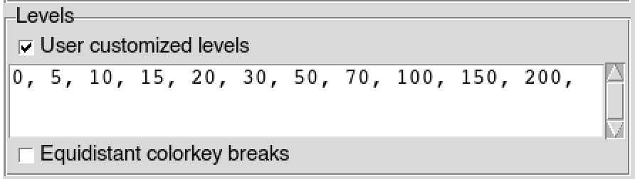

Options
Map Options
Each time you display a map on CDT, there is a button next to the button used to display the map. It allows you to change the default color key, the intervals of values at which the map will be display, and the labels of x and y axis.
Clicking on the button will opens the following dialog box.
You can select a predefined color key from the drop down list. CDT has 9 predefined color key you can use. If you want to reverse the order of the colors, check
 Reverse .
Reverse .
Initial color key
Reversed color keyIf you display a map of spatial points data in point type, this option will be shown allowing you to specify the size of the dot to display on the map. Type the size of the point you want, you also can use the up/down arrow to increase/decrease the size.
If you want to create your own color key check
User customized colorkey , it will open a dialog box allowing you to create the color key. See CDT customized color key for more details on how to create the color key.After you plotting the map, the default levels used to plot the map are displayed in this text widget. If you want to change the levels at which the map will be displayed you can check
User customized levels then type the values of the levels you want in the text widget, the values must be separated by comma. In case you use levels at irregular intervals, you can check Equidistant colorkey breaks to make a regular intervals when displayed on the color bar. The example below shows how to edit the color key levels.Let’s say you have a default levels set by CDT as follow
The corresponding color bar displayed looks like the following image
If you want to change this default levels, first check
User customized levels then edit the values of the levels in text widget below. For example
It displays the following color bar
The color bar is displayed in irregular interval, to change it into a regular interval, check
Equidistant colorkey breaks .The color bar is displayed like this
If you want to add a title to the map, check the box in the left and type the title in the input text in the right. If CDT displays a default title to the map and you do not want to add title, check the box and leave the input text empty.
If you want to add label to the color bar, check the box in the left and type the label in the input text in the right.
The label will be displayed under the color bar if it is displayed in horizontal and in the right side for vertical.
If this option is shown, it allows you to insert a scale bar to the map. Check
Add a map scale and select the position of the scale bar.
Shapefile Layer Options
When you add a shapefiles as layer to a map, you can change the color and width of the lines with the button next to the check box Add Shapefile to Map .
To change the color, click on the colored rectangle. It opens a color picker allowing to choose the color.
Type the width of the lines you want, you also can use the up/down arrow to increase/decrease the width.